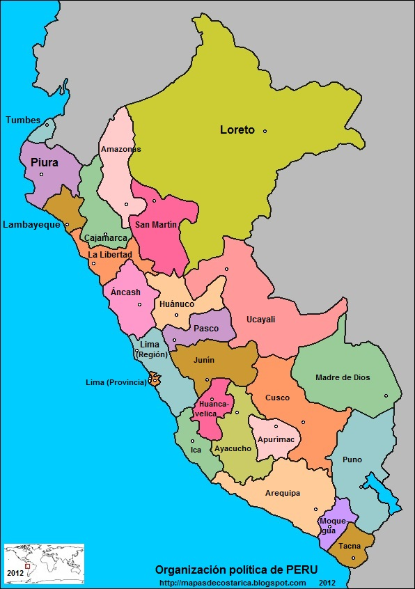

Lugares Turísticos de Perú
En cada rincón de Perú te espera una experiencia inolvidable. Paisajes que te roban el aliento, culturas que te abrazan y sabores que despiertan tus sentidos. Los lugares imperdibles de este país son mucho más que destinos: son puertas a emociones profundas y memorias imborrables. Ven y déjate cautivar por la magia de Perú. El viaje de tu vida te espera.
Machu Picchu
Machu Picchu es una impresionante ciudadela inca situada en lo alto de los Andes peruanos. Declarada Patrimonio de la Humanidad por la UNESCO, es uno de los destinos turísticos más visitados del mundo. Rodeada de paisajes montañosos y místicos, su arquitectura de piedra y su historia ancestral fascinan a los visitantes. Explorar Machu Picchu es una experiencia única que conecta con el legado de los incas.
Arequipa
Arequipa, la “Ciudad Blanca”, destaca por su arquitectura colonial construida en sillar volcánico. Ubicada al pie del majestuoso volcán Misti, su centro histórico es Patrimonio de la Humanidad. Arequipa combina historia, cultura y naturaleza, con atractivos como el Monasterio de Santa Catalina y el Cañón del Colca. Su gastronomía y tradiciones hacen de esta ciudad un destino imperdible en el sur del Perú
Lago Titicaca
El Lago Titicaca, el lago navegable más alto del mundo, es un lugar lleno de cultura y belleza natural. Compartido por Perú y Bolivia, alberga comunidades quechuas y aimaras que preservan sus tradiciones. Sus islas flotantes de totora, como las de los Uros, son un atractivo único. El paisaje altiplánico y el legado ancestral convierten al Titicaca en un destino fascinante.

Amazonía Peruana
La Amazonía peruana es una de las regiones más biodiversas del planeta. Sus selvas exuberantes albergan miles de especies de flora y fauna únicas. Navegar por el río Amazonas, explorar reservas naturales y conocer comunidades indígenas permite descubrir este ecosistema vital. Iquitos, principal puerta de entrada, ofrece aventuras ecológicas inolvidables en la selva tropical más extensa y fascinante del mundo.
Líneas de Nazca
Las Líneas de Nazca son misteriosos geoglifos trazados en el desierto de Nazca hace más de mil años. Estas enormes figuras de animales, plantas y formas geométricas solo pueden apreciarse completamente desde el aire. Su propósito exacto sigue siendo un enigma, atrayendo a arqueólogos y turistas. Visitar Nazca permite explorar uno de los legados más enigmáticos de las antiguas culturas peruanas.

Huacachina
Huacachina es un oasis natural en pleno desierto de Ica, famoso por su laguna rodeada de palmeras y altas dunas de arena. Es un destino ideal para practicar sandboarding y paseos en buggy. El encanto del paisaje y las actividades de aventura atraen a visitantes de todo el mundo. Huacachina combina naturaleza y emoción, ofreciendo una experiencia única en el corazón del desierto peruano.
Mapa Interactivo - Lugares del Perú
Haz clic en las regiones del mapa para conocer más sobre los lugares turísticos de Perú.